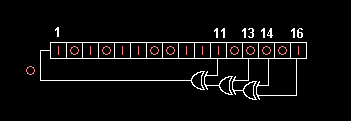

Goals
- Look at the internal representation of numbers.
- Practice working with dynamic memory allocation.
- Introduce you to Valgrind, a utility for checking memory leaks.
Getting the files
As stated in lab 0, starter code for labs will be distributed through the
fa18-lab-starter repository. ssh into your own hive repo, and ensure your repo has this starter listed as a remote. Remember from labs 0 and 1 we can check this via:
$ git remote -v
Once you've ensured your repository has the starter remote, grab the new lab files via:
$ git fetch starter
$ git merge starter/master
A merge prompter will show up and for those that are unfamiliar with vim, simply type ':wq' and hit enter.
You should now have a file called lab02 in your personal repository, ready to make changes!
Note: If you're working locally:
Remember, if you would like to work from your local machine, make sure your hive and local repositories are synced. Currently, you have pulled the lab 2 starter to your hive repo, so the hive repo is "ahead" of your local repo. To sync them back up, from the "ahead" repo (hive) push to origin/master and then from the "behind" repo (local) pull from origin/master.
Exercise 1: Bit Operations
For this exercise, you will complete bit_ops.c by implementing the following three bit manipulation functions. You will want to use bitwise operations such as and (&), or (|), xor (^), not (~), left shifts (<<), and right shifts (>>). Avoid using any loops or conditional statements.
// Return the nth bit of x.
// Assume 0 <= n <= 31
unsigned get_bit(unsigned x,
unsigned n);
// Set the nth bit of the value of x to v.
// Assume 0 <= n <= 31, and v is 0 or 1
void set_bit(unsigned * x,
unsigned n,
unsigned v);
// Flip the nth bit of the value of x.
// Assume 0 <= n <= 31
void flip_bit(unsigned * x,
unsigned n);
Once you complete these functions, you can compile and run your code using the following commands.
$ make bit_ops $ ./bit_ops
This will print out the result of a few limited tests.
Checkoff [1/3]
- Show how you implemented get, set, and flip.
- Show the output of running the tests.
Exercise 2: Linear feedback shift register
In this exercise, you will implement a lfsr_calculate() function to compute the next iteration of a linear feedback shift register (LFSR). Applications that use LFSRs are: Digital TV, CDMA cellphones, Ethernet, USB 3.0, and more! This function will generate pseudo-random numbers using bitwise operators. For some more background, read the Wikipedia article on Linear feedback shift registers. In lfsr.c, fill in the function lfsr_calculate() so that it does the following:
Hardware diagram (see explanation below)

Explanation of the above diagram
- On each call to lfsr_calculate, you will shift the contents of the register 1 bit to the right.
- This shift is neither a logical shift or an arithmetic shift. On the left side, you will shift in a single bit equal to the Exclusive Or (XOR) of the bits originally in position 11, 13, 14, and 16.
- The curved head-light shaped object is an XOR, which takes two inputs (a, b) and outputs a^b.
- If you implemented lfsr_calculate() correctly, it should output all 65535 positive 16-bit integers before cycling back to the starting number.
- Note, the diagram may be labeled a little misleadingly; to clarify, the bits go from left to right (the leftmost bit is the MSB and the rightmost bit is the LSB), but the LSB is labeled 16, and the MSB is labeled 1.
After you have correctly implemented lfsr_calculate(), compile lfsr and run it. Your output should be similar to the following:
$ make lfsr $ ./lfsr My number is: 1 My number is: 5185 My number is: 38801 My number is: 52819 My number is: 21116 My number is: 54726 My number is: 26552 My number is: 46916 My number is: 41728 My number is: 26004 My number is: 62850 My number is: 40625 My number is: 647 My number is: 12837 My number is: 7043 My number is: 26003 My number is: 35845 My number is: 61398 My number is: 42863 My number is: 57133 My number is: 59156 My number is: 13312 My number is: 16285 ... etc etc ... Got 65535 numbers before cycling! Congratulations! It works!
Checkoff [2/3]
- Show how you implemented your lfsr_calculate function.
- Show the output from running ./lfsr.
Exercise 3: Memory Management
This exercise uses vector.h, vector-test.c, and vector.c, where we provide you with a framework for implementing a variable-length array. This exercise is designed to help familiarize you with C structs and memory management in C.
Your task is to explain why the two functions bad_vector_new() and also_bad_vector_new() are bad and fill in the functions vector_new(), vector_get(), vector_delete(), and vector_set() in vector.c so that our test code vector-test.c runs without any memory management errors. Comments in the code describe how the functions should work. Look at the functions we've filled in to see how the data structures should be used. For consistency, it is assumed that all entries in the vector are 0 unless set by the user. Keep this in mind as malloc() does not zero out the memory it allocates.
For explaining why the two bad functions are incorrect, keep in mind that one of these functions will actually run correctly (assuming correctly modified vector_new, vector_set, etc.) but there may be other problems; hint: think about memory usage.Using Valgrind
To help you to find memory bugs, we have installed a copy of Valgrind Memcheck. Valgrind is ONLY on the lab machines in the Hive and the Orchard. This program will run an executable while keeping track of what registers and regions of memory contain allocated and/or initialized values. The program will run much slower (by a factor of about 10 to 50) so that this information can be collected, but Valgrind Memcheck can identify many memory errors automatically at the point at which they are produced. You will need to learn the basics of how to parse the Valgrind output.
You can test your code in the following two ways:
// 1) to check functionality: $ make vector-test $ ./vector-test // 2) to check memory management using Valgrind: $ make vector-memcheck
The Makefile calls Valgrind as follows:
$ valgrind --tool=memcheck --leak-check=full --track-origins=yes [OS SPECIFIC ARGS] ./<executable>
The --track-origins flag attempts to identify the sources of unitialized values. The --leak-check=full option tries to identify memory leaks. [OS SPECIFIC ARGS] are simply a set of arguments to Valgrind that differ across operating systems (in our case, Ubuntu (Linux)). If you are interested in learning more about these, see the Makefile.
The last line in the Valgrind output is the line that will indicate at a glance if things have gone wrong. Here's a sample output from a buggy program:
==47132== ERROR SUMMARY: 1200039 errors from 24 contexts (suppressed: 18 from 18)
If your program has errors, you can scroll up in the command line output to view details for each one. For our purposes, you can safely ignore all output that refers to suppressed errors. In a leak-free program, your output will look like this:
==44144== ERROR SUMMARY: 0 errors from 0 contexts (suppressed: 18 from 18)
Again, any number of suppressed errors is fine; they do not affect us.
Feel free to also use a debugger or add printf statements to vector.c and vector-test.c to debug your code.
Checkoff [3/3]
- Show your modifications to vector.c.
- Show the output from running ./vector-test.